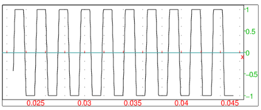

-
Input:
threshold([2,3,1,2,5,4,3,7],3)
Output:
- Input:
threshold([2,3,1,2,5,4,3,7],3=a,’>=’)
Output:
- Input:
threshold([-2,-3,1,2,5,-4,3,-1],3=0,abs=true)
Output:
- Input:
threshold([-2,-3,1,2,5,-4,3,-1],3=0,’<=’,abs=true)
Output:
- Input:
threshold([-120,-11,-3,0,7,27,111,234],[-100,100])
Output:
⎡
⎣ | −100,−11,−3,0,7,27,100,100 | ⎤
⎦ |
- Input:
threshold([-120,-11,-3,0,7,27,111,234],[-100=-inf,100=inf])
Output:
⎡
⎣ | −∞ ,−11,−3,0,7,27,+∞ ,+∞ | ⎤
⎦ |
- In this example, a square-like wave is created from a single
sine wave by clipping sample values.
Input:
| data:=threshold(3*sin(2*pi*440*soundsec(2)),[-1.0,1.0]):; |
| s:=createwav(data):; |
| playsnd(s)
|
Output:
1
Input:
plotwav(s,range=[1000,2000])
Output:
